Сентябрь 2009
Наши жильцы:
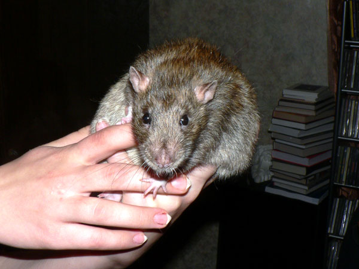
Дон Рэба. Характер нордический.

Дон Румата. Характер наглый и общительный.
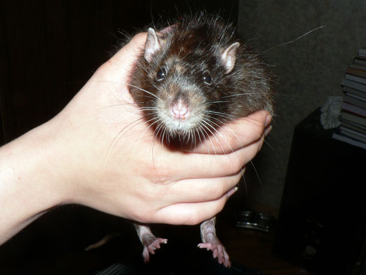
Нагваль Никодим. Характер безупречный.

Жоффруа Тори. Характер породистый.
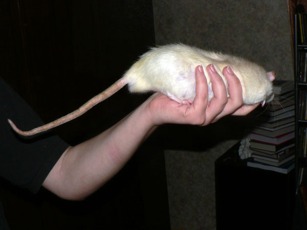
Виконт Маггот-Сосискин. Характер вертлявый.

Он же, зафиксированный.

Спина Сосискина. Плохо видно (вспышка от мыльницы), но уже все на спине зажило, только небольшая проплешинка есть.
Новая клетка
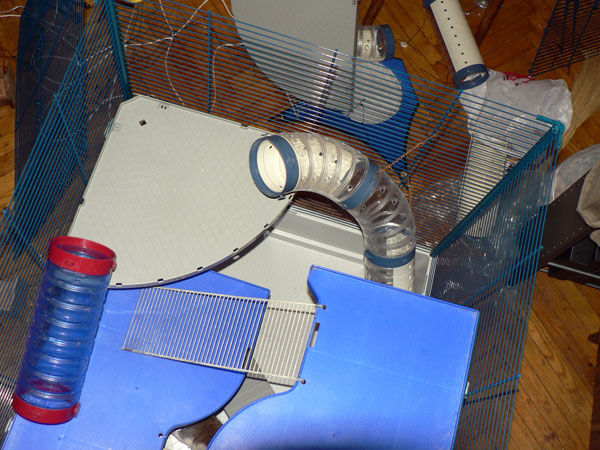
Прикупили мы тут новую клеточку… два блока, четыре большие
полки,
пять маленьких, шесть лестниц, более десяти труб, три домика.
Сборка конструктора по индивидуальной схеме,
разрабатываемой на ходу,
заняла около 10 человеко-часов.
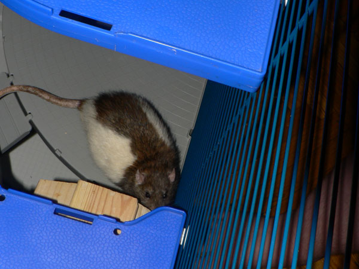
Во время работы нам пытались помочь.

Дон Рэба и Сосискин дрыхнут в гамаке. Труба справа — это лаз к гамаку.
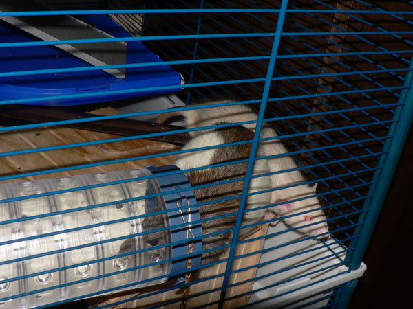
Правая нижняя передняя часть верхнего блока клетки.
Дон
Румата собрался идти по тоннелю в левую нижнюю заднюю часть, за ним виден
Жорик.
А сидят они на большом домике.

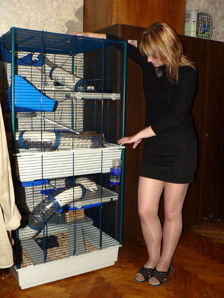
Ах да! Чуть не забыл. Вот вам вид клетки целиком.
Можно
считать, что у нас теперь двухкомнатная квартира, просто в одной комнате
крысы живут.

Правая верхняя передняя часть верхнего блока клетки.
Дон Румата ест кукурузу, виден туннель к гамаку и обгрызенная зерновая
палочка на задней полке (столовая).
Левее сзади виден Сосискин у
плетеного домика.
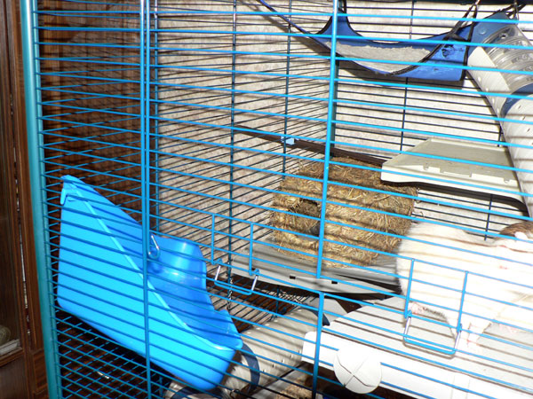
Левая нижняя передняя часть верхнего блока клетки.
Вообще-то это хорячий туалет, но им никогда не пользовались,
и если туда
положить тряпочку, получается чудный балкон.

Правая нижняя передняя часть верхнего блока клетки.
Дон
Рэба сидит на большом домике. Виден туннель к люку в нижний блок,
к
плетеному домику можно добраться по лестнице с синей полки.
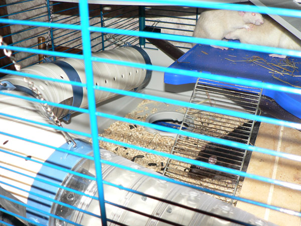
Вид на правую нижнюю заднюю часть верхнего блока клетки.
Виден люк в нижний блок и Никодим.

Правая верхняя передняя часть нижнего блока клетки.
Полка с поилкой, туннель вниз, короткий туннель на заднюю полку.
Над
синей полкой слева — люк верхнего блока.
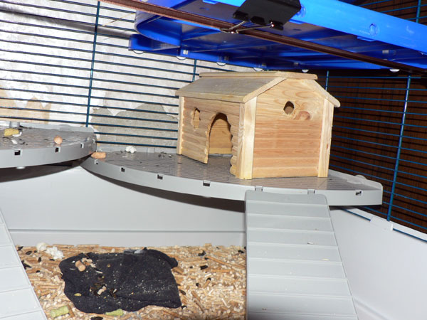
Правая нижняя задняя часть нижнего блока клетки.
Домик,
из которого подстилку перетащили вниз.
Слева — такая же полукруглая полка
(малая столовая для сухого корма).

А вот так приходится засыпать сухой корм…
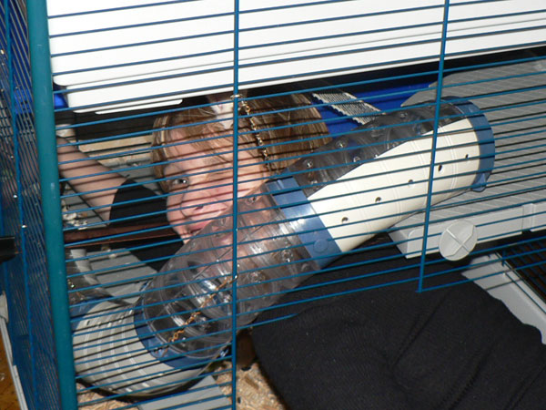
Совсем Сосискин обнаглел, на голову уселся!

Обеденная большая миска пуста (видна на задней полке),
приходится есть из маленькой миски для перекуса.